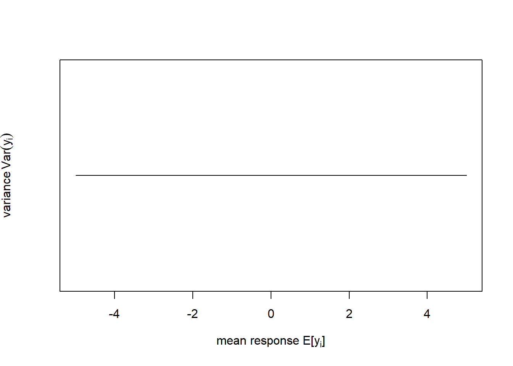
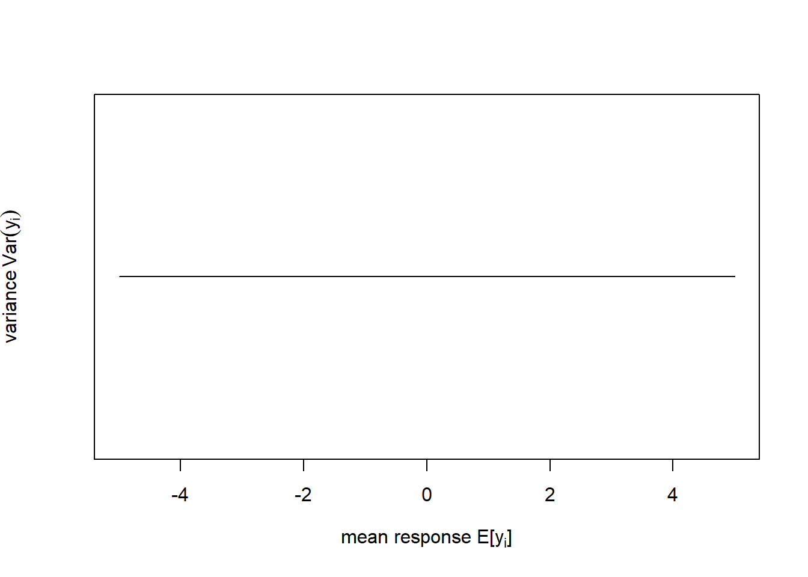
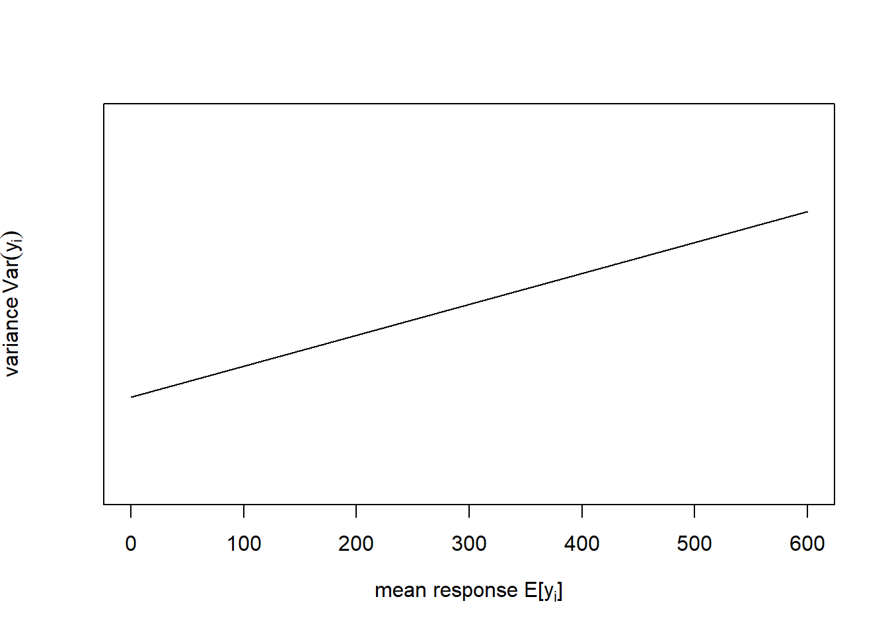
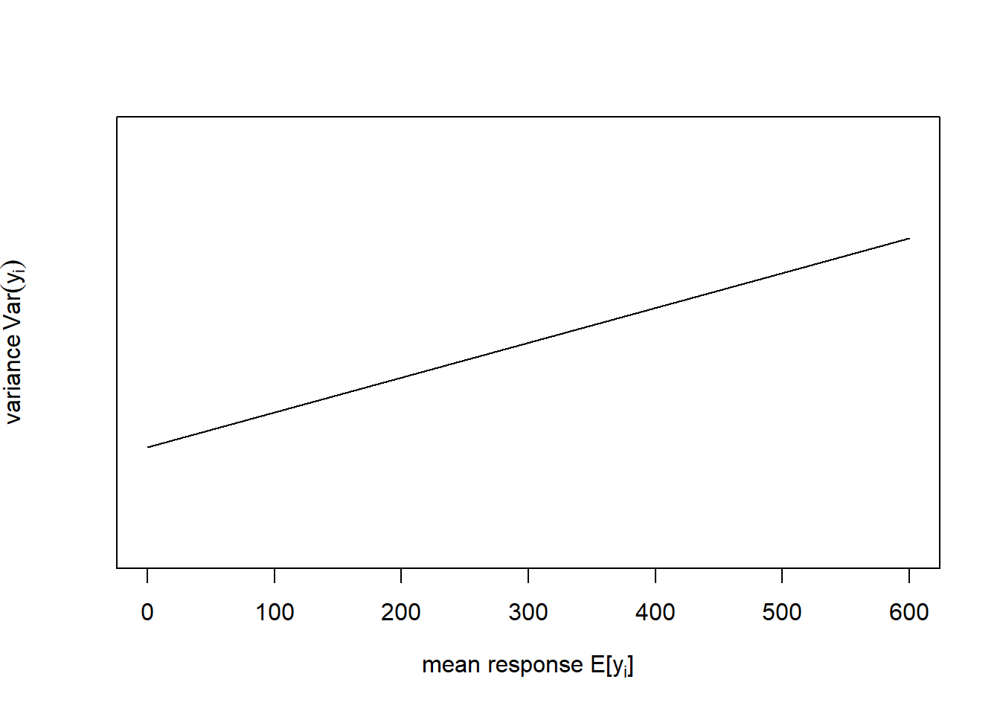
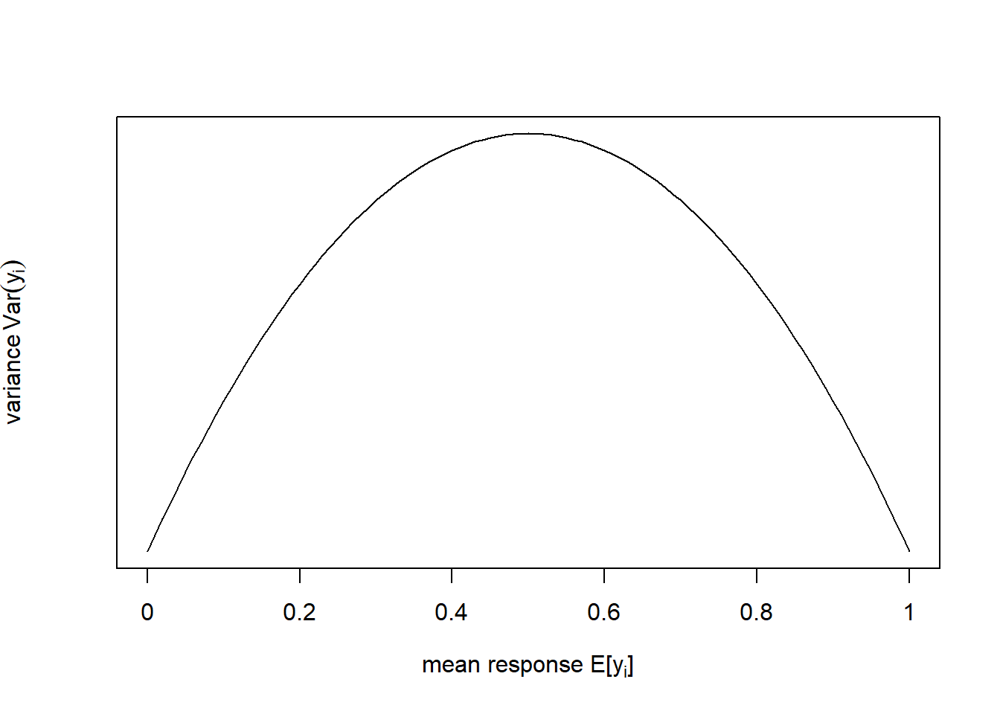
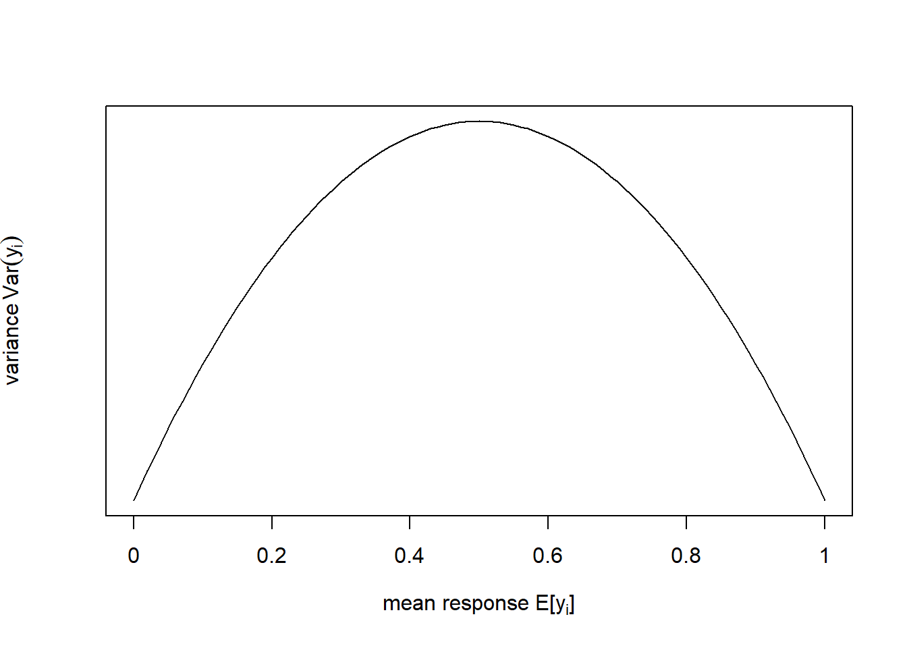
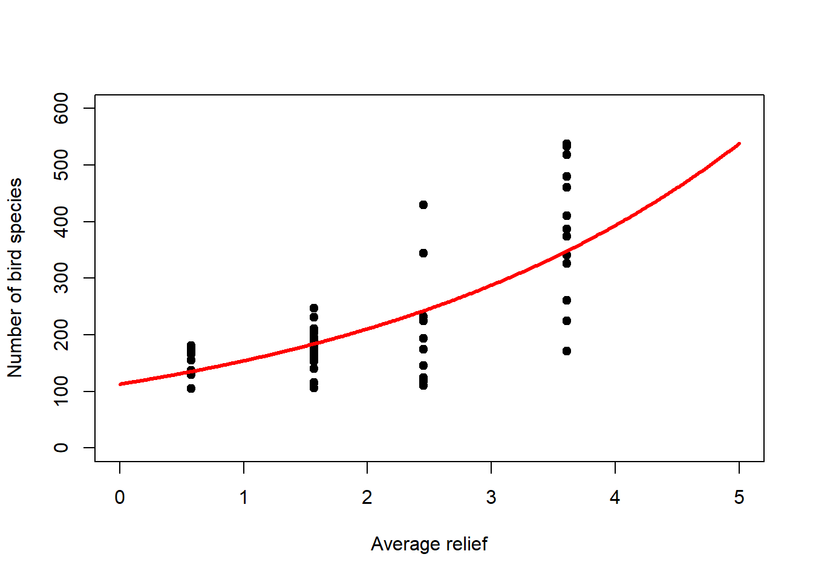

Chapter 6 Generalised Linear Models (GLMs)
Up to this point we have looked at the linear model \[\begin{equation} y_i = \beta_0 + \sum_{j=1}^{p}\beta_j \cdot x_{ij} + \epsilon_i \tag{6.1} \end{equation}\] with potentially multiple predictor variables \(x_j\) that could be continuous, categorical or mixed. If \(\epsilon_i\sim N\left(\mu_i=0,\sigma\right)\) then: \[\begin{equation} y_i\sim N\left(\mu_i=\beta_0 + \sum_{j=1}^{p}\beta_j \cdot x_{ij},\sigma\right) \tag{6.2} \end{equation}\]
So in effect we have modelled the response variable \(y_i\) as realisations from a normal distribution whose mean \(\mu_i\) (the mean response) is not a constant but a linear function of the predictors, hence the index \(i\). In this chapter - with Generalised Linear Models (GLMs) - we generalise this model to allow:
- Distributions other than the normal distribution in Equation (6.2)
- Transformations of the linear function linking predictors and mean response inside that distribution
This is important as it allows us to deal with a number of shortcomings of linear regression. Equation (6.2) implies that \(y_i\) are continuous observations between \(-\infty\) and \(\infty\), which is the so called support space of the normal distribution (Figure 6.1, left). Equation (6.2) further implies that the variance \(Var\left(y_i\right)=\sigma^2\) remains constant with changing mean response \(E\left[y_i\right]=\mu_i\) (Figure 6.1, right).15
library("latex2exp")
# generate y values from -5 to 5 in increments of 0.1
y <- seq(-5,5,0.1)
# plot pdf of normal distribution with mu=0 and sigma=1 for y
plot(y, dnorm(y, mean=0, sd=1), type='l', xlab='y', ylab='pdf')
# plot schematic of constant variance for changing mean response
plot(c(-5,5), c(0,0), type='l', xlim=c(-5,5), yaxt='n',
xlab=TeX('mean response $E\\left[y_i\\right]$'),
ylab=TeX('variance $Var\\left(y_i\\right)$')) 

Figure 6.1: Left: Probability density function (pdf) of the normal distribution of a response variable \(y\) (for this schematic the standard normal distribution \(N(\mu=0,\sigma=1)\) is shown). Right: In linear regression the variance of \(y\) does not change with the mean response of \(y\) as Equation (6.2) implies.
These two assumption, however, often do not hold for geographical data, e.g. in case of:
- Continuous observations restricted to positive outcomes
- Data bounded over a fixed interval
- Non-constant variance
- Discrete data such as counts and proportions
To some extent these shortcomings can be solved by transforming the data. But often it will be better to extend the linear model in the form of a GLM. In this course we use GLMs that are based on mathematics similar to the linear model to estimate the parameters, so we do not go into the particularities here. In my course Applied Statistical Modelling in the summer term we extend the realm of possible model choices even further.
In this chapter we will deal with two examples, one of count data and another of proportion data. The count data example is from Piegorsch and Bailer (2005); it models the number of bird species on the Indian subcontinent as a function of average altitudinal relief (Figure 6.2, left).16 These data are bounded below; we cannot have counts less than zero. The residual variance is non-constant (Figure 6.2, right). The residual error is non-normal. And the data require a discrete distribution.
# load birds data
birds <- read.table("data/birds.txt",header=T)
# plot
plot(birds$relief, birds$y, pch = 19, type = 'p', xlim=c(0,5), ylim=c(0,600),
xlab='Average relief', ylab='Number of bird species')
# plot schematic of increasing variance for increasing mean response
plot(c(0,600), c(-1,1), type='l', xlim=c(0,600), ylim=c(-2,2), yaxt='n',
xlab=TeX('mean response $E\\left[y_i\\right]$'),
ylab=TeX('variance $Var\\left(y_i\\right)$')) 

Figure 6.2: Left: Number of bird species as a function of average relief. Data from: Piegorsch and Bailer (2005). Right: In this example the variance of \(y\) increases with the mean response of \(y\).
The proportion data example is from Dormann (2013); it models the proportion of organisms surviving as a function of the concentration of a toxic substance (Figure 6.3, left). These data are strictly bounded; we cannot have a proportion greater than 1 or less than 0. The residual variance is non-constant (Figure 6.3, right). And the residual error is non-normal; confidence intervals are asymmetric whenever predictions are large (close to 1) or small (close to 0).
# load survival data
survival <- read.table("data/survival.txt",header=T)
# these data are given in the form "trials" (here total no. organisms)
# and "successes" (here no. organisms surviving)
# so transform into proportions
survival$proportion <- survival$surviving / survival$total
# plot
plot(survival$concentration, survival$proportion, pch = 19, type = 'p',
xlim=c(0,4), ylim=c(0,1), xlab='Concentration (mg/l)', ylab='Proportion')
# plot schematic of variance peaking at average mean response
plot(seq(-5,5,0.1), -seq(-5,5,0.1)^2, type='l', xlim=c(-5,5), ylim=c(-25,0),
xaxt='n', yaxt='n', xlab=TeX('mean response $E\\left[y_i\\right]$'),
ylab=TeX('variance $Var\\left(y_i\\right)$'))
axis(side=1, at=seq(-5,5,2),labels=c("0","0.2","0.4","0.6","0.8","1")) 

Figure 6.3: Left: Proportion of organisms surviving as a function of the concentration of a toxic substance. Data from: Dormann (2013). Right: In this example the variance of \(y\) peaks at the mean response of \(y\).
6.1 Generalising the normal distribution through the exponential class of probability functions
In this section we see how the normal distribution of linear regression can be generalised via the exponential class of probability functions. The normal distribution is a member of this class and so are other distributions, like the Poisson and the binomial that we need for our examples. It can then be shown - which we do not do here - that the mathematics of linear regression can be extended to those other distributional assumptions. This is not to say that distributions that are not in the exponential class cannot be used for regression analysis; it is just that such regression problems are not so straightforward to solve in classical statistics.17
The exponential class of probability functions is formalised as: \[\begin{equation} f(y)=\exp\left\{\frac{y\cdot\theta-\color{red}{B(\theta)}}{\color{green}{A(\varphi)}}+\color{blue}{C(y,\varphi)}\right\} \tag{6.3} \end{equation}\] With the additional constraint that the support space \(\mathbb{S}\) of \(y\) cannot depend on \(\theta\).
\(\color{green}{A(\varphi)}\), \(\color{red}{B(\theta)}\) and \(\color{blue}{C(y,\varphi)}\) are functions that take on different forms for different members of the exponential class. The parameter \(\theta\) is called the natural parameter, and the parameter \(\varphi>0\) is called the dispersion (or scale) parameter.
We can now transform the pdf of the normal distribution (Figure 6.1, left) to the form of Equation (6.3) to demonstrate how the normal distribution is a member of the exponential class, and which the natural and dispersion parameters are in this case:
\[\begin{equation} f(y)=\frac{1}{\sigma\cdot\sqrt{2\cdot\pi}}\cdot\exp{-\frac{(y-\mu)^2}{2\cdot\sigma^2}}\cdot I_{(-\infty,\infty)}(y) \tag{6.4} \end{equation}\]
\[\begin{equation} f(y)=\exp\left\{\frac{y\cdot\mu-\color{red}{\frac{1}{2}\cdot\mu}}{\color{green}{\sigma^2}}\color{blue}{-\frac{y^2}{2\cdot\sigma^2}-\frac{1}{2}\cdot\log\left(2\cdot\pi\cdot\sigma^2\right)+\log\left[I_{(-\infty,\infty)}(y)\right]}\right\} \tag{6.5} \end{equation}\]
Note, the indicator function \(I_{(-\infty,\infty)}(y)\) is 1 when \(y\) is between \(-\infty\) and \(\infty\) and 0 otherwise, indicating the support space \(\mathbb{S}\). By comparing Equation (6.3) and Equation (6.5) we can see that for the normal distribution the natural parameter \(\theta\) is \(\mu\) and the dispersion parameter \(\varphi\) is \(\sigma\). The mean response is \(E[y]=\mu\).
Next we see how the Poisson distribution (Figure 6.4, left), which we will need for count data, is also a member of the exponential class. The pdf of the Poisson distribution is:
\[\begin{equation} f(y)=\frac{\lambda^y\cdot\exp(-\lambda)}{y!}\cdot I_{(0,1,\ldots,n)}(y) \tag{6.6} \end{equation}\]
\[\begin{equation} f(y)=\exp\left\{y\cdot\log(\lambda)-\color{red}{\lambda}\color{blue}{-\log(y!)+\log\left[y!\cdot I_{(0,1,\ldots,n)}(y)\right]}\right\} \tag{6.7} \end{equation}\]
Note, the symbol \(!\) stands for the factorial.18 The support space \(\mathbb{S}\) is here restricted to positive whole numbers. By comparing Equation (6.3) and Equation (6.7) we can see that for the Poisson distribution the natural parameter \(\theta\) is \(\log(\lambda)\) and the dispersion parameter \(\varphi\) is 1; the denominator in Equation (6.3) has vanished in Equation (6.7). The mean response is \(E[y]=\lambda\).
The one parameter of the Poisson distribution \(\lambda\) controls both the mean as well as the variance of the distribution, i.e. if the mean goes up then the variance goes up too (Figure 6.4, left). Not only is the Poisson distribution, due to its discreteness and positive support space, a natural distribution for count data, it can also capture the increase in variance with increase in mean response that we often see in count data such as our bird species example (Figure 6.2).


Figure 6.4: Left: Probability density function (pdf) of the Poisson distribution of a response variable \(y\) for three variants of the parameter \(\lambda\). Right: Probability density function (pdf) of the binomial distribution of a response variable \(y\), normalised by the number of “trials” \(n\), for three variants of the parameter \(\pi\).
Lastly, the binomial distribution (Figure 6.4, right), which we will need for proportion data, is also a member of the exponential class. The pdf of the binomial distribution is:
\[\begin{equation} f(y)=\binom{n}{y}\cdot\pi^y\cdot (1-\pi)^{n-y}\cdot I_{(0,1,\ldots,n)}(y) \tag{6.8} \end{equation}\]
\[\begin{equation} f(y)=\exp\left\{y\cdot\log(\frac{\pi}{1-\pi})\color{red}{+n\cdot\log(1-\pi)}+\color{blue}{\log\left[\binom{n}{y}\cdot I_{(0,1,\ldots,n)}(y)\right]}\right\} \tag{6.9} \end{equation}\]
Note, \(\binom{n}{y}\) stands for the binomial coefficient.19 The support space \(\mathbb{S}\) is again restricted to positive whole numbers. By comparing Equation (6.3) and Equation (6.9) we can see that for the binomial distribution the natural parameter \(\theta\) is \(\log(\frac{\pi}{1-\pi})\), the so called logit function or log-odds20 and the dispersion parameter \(\varphi\) is again 1. The mean response is \(E[\frac{y}{n}]=\pi\). Note, here we normalise the response \(y\) by the number of “trials” \(n\) to deal with proportions, while the binomial distribution per se is a count data distribution.
The one parameter of the binomial distribution \(\pi\) controls the mean, the variance as well as the shape of the distribution (Figure 6.4, right). It thus captures the change in variance with change in mean response as well as the asymmetry of the response distribution near 1 and 0 that we see in strictly bounded data such as our survival proportions example (Figure 6.3).
6.2 The link function between mean response and predictor variables
Now we come to the second move of GLMs, the link function between mean response and predictor variables. To understand this, we first introduce the symbol \(\eta_i\) as shorthand for the linear predictor: \[\begin{equation} \eta_i = \beta_0 + \sum_{j=1}^{p}\beta_j \cdot x_{ij} \tag{6.10} \end{equation}\]
The link function \(g(\cdot)\) then relates the linear predictor to the mean response: \[\begin{equation} \eta_i = g\left(E\left[y_i\right]\right) \tag{6.11} \end{equation}\] Remember that in linear regression the linear predictor was simply equated with the parameter \(\mu_i\) (Equation (6.2)), which is just the mean response \(E\left[y_i\right]\) of the normal model. This is called the identity link: \(\eta_i=E\left[y_i\right]=\mu_i\).
The inverse link function \(g^{-1}(\cdot)\) then solves the same equation for the mean response: \[\begin{equation} E\left[y_i\right]=g^{-1}\left(\eta_i\right) \tag{6.12} \end{equation}\]
This formulation of the mean response is eventually entered into the assumed response distribution, e.g. in case of the normal distribution (compare Equation (6.2)): \(y_i\sim N\left(E\left[y_i\right]=\mu_i=\eta_i,\sigma\right)\). Note, it is only ever the inverse link-function that is mathematically used in the model, not the link function itself.
The choice of link function is best motivated by our mechanistic understanding of the process to be modelled. If not, then the natural parameter \(\theta\) - whatever it is for the response distribution we are using - may be chosen as the link function – this is called the canonical link function (Table 6.1).
| Response distribution | Canonical link function |
|---|---|
| Normal | Identity-link: \(\eta_i=\mu_i\) |
| Poisson | Log-link: \(\eta_i=\log\left(\lambda_i\right)\) |
| Binomial | Logit-link: \(\eta_i=\log\left\{\frac{\pi_i}{1-\pi_i}\right\}\) |
The resultant GLMs are compared in Table 6.2.
| Normal | Poisson | Binomial | |
|---|---|---|---|
| Linear predictor | \(\eta_i = \beta_0 + \sum_{j=1}^{p}\beta_j \cdot x_{ij}\) | \(\eta_i = \beta_0 + \sum_{j=1}^{p}\beta_j \cdot x_{ij}\) | \(\eta_i = \beta_0 + \sum_{j=1}^{p}\beta_j \cdot x_{ij}\) |
| Response distribution | \(N\left(\mu_i,\sigma\right)\) | \(Pois\left(\lambda_i\right)\) | \(B\left(n,\pi_i\right)\) |
| Mean response | \(E\left[y_i\right]=\mu_i\) | \(E\left[y_i\right]=\lambda_i\) | \(E\left[\frac{y_i}{n}\right]=\pi_i\) |
| Link function | \(\eta_i=\mu_i\) | \(\eta_i=\log\left(\lambda_i\right)\) | \(\eta_i=\log\left\{\frac{\pi_i}{1-\pi_i}\right\}\) |
| Inverse link function | \(\mu_i=\eta_i\) | \(\lambda_i=\exp(\eta_i)\) | \(\pi_i=\frac{\exp\left(\eta_i\right)}{1+\exp\left(\eta_i\right)}\) |
| GLM | \(N\left(\eta_i,\sigma\right)\) | \(Pois\left(\exp\left(\eta_i\right)\right)\) | \(B\left(n,\frac{\exp\left(\eta_i\right)}{1+\exp\left(\eta_i\right)}\right)\) |
| Linear regression | Log-linear regression | Logistic regression |
6.3 Log-linear regression
Regression analysis with the Poisson distribution and log-link is called log-linear regression. Let us look at this for the bird species dataset (Figure 6.5, left). Note that it is the linear predictor \(\eta_i\) that gets transformed non-linearly (through \(g^{-1}(\cdot)\)), not the data \(y_i\)! Nevertheless, we can transform the data (through \(g(\cdot)\)) to get an idea of what happens (Figure 6.5, right).
# fit log-linear model to birds data
birds_fit <- glm(y ~ relief, family = poisson(link = "log"), data = birds)
# plot data
plot(birds$relief, birds$y, pch = 19, type = 'p', xlim=c(0,5), ylim=c(0,600),
xlab='Average relief', ylab='Number of bird species')
# extract modelled mean response and plot on top of data
newdat <- data.frame(relief=seq(0,5,0.01))
y_new <- predict(birds_fit, newdata=newdat, type = "response")
lines(newdat$relief, y_new, lwd = 3, col = "red")
# plot data on log-scale
plot(birds$relief, log(birds$y), pch = 19, type = 'p', xlim=c(0,5), ylim=c(4.5,6.5),
xlab='Average relief', ylab='log(Number of bird species)')
# extract modelled mean linear predictor and plot on top of log-data
logy_new <- predict(birds_fit, newdata=newdat, type = "link")
lines(newdat$relief, logy_new, lwd = 3, col = "red")

Figure 6.5: Left: Bird species data with fitted log-linear model. The linear predictor is transformed via the inverse log-link to curve upwards. Right: If we transform the response data using the log-link then we can see the linear predictor at the heart of the model.
To get a sense of what is happening here, consider Figure 6.6. In order to represent the variation in the response we could use one overall Poisson distribution (a), which is equivalent to log-linear regression with an intercept only. This clearly does not capture the variation in the data. By introducing “relief” as a predictor we effectively model every relief level with its own Poisson distribution. This is especially easy to show here as the dataset has only four levels (b)-(e). What log-linear regression does is average those individual Poisson distributions to form an overall distribution of the response (f). This is clearly better at capturing the variation in the data, the predictor “relief” explains some of that variation, but the model is still underestimating the increase in variance with increasing mean response; this is especially visible in (d)-(e). We say the data are over-dispersed with respect to the Poisson process, a topic we will come back to in Chapter 6.6.
![Illustration of log-linear regression with the birds example. (a) One overall Poisson distribution fitted to the data; equivalent to log-linear regression with an intercept only. This clearly does not capture the variation in the data. (b)-(e) Individual Poisson distributions for the four relief levels (compare Figure \@ref(fig:loglin)) as estimated by log-linear regression with relief as predictor. (f) Overall distribution estimated by the log-linear model, obtained by averaging the four individual distributions. This is clearly better at capturing the variation in the data, the predictor "relief" explains some of that variation, but the model is still underestimating the increase in variance with increasing mean response, e.g. (d)-(e). The data are _over-dispersed_ with respect to the Poisson process (see Chapter \@ref(overdisp)).](qm4g_files/figure-html/birds-1.png)
![Illustration of log-linear regression with the birds example. (a) One overall Poisson distribution fitted to the data; equivalent to log-linear regression with an intercept only. This clearly does not capture the variation in the data. (b)-(e) Individual Poisson distributions for the four relief levels (compare Figure \@ref(fig:loglin)) as estimated by log-linear regression with relief as predictor. (f) Overall distribution estimated by the log-linear model, obtained by averaging the four individual distributions. This is clearly better at capturing the variation in the data, the predictor "relief" explains some of that variation, but the model is still underestimating the increase in variance with increasing mean response, e.g. (d)-(e). The data are _over-dispersed_ with respect to the Poisson process (see Chapter \@ref(overdisp)).](qm4g_files/figure-html/birds-2.png)
![Illustration of log-linear regression with the birds example. (a) One overall Poisson distribution fitted to the data; equivalent to log-linear regression with an intercept only. This clearly does not capture the variation in the data. (b)-(e) Individual Poisson distributions for the four relief levels (compare Figure \@ref(fig:loglin)) as estimated by log-linear regression with relief as predictor. (f) Overall distribution estimated by the log-linear model, obtained by averaging the four individual distributions. This is clearly better at capturing the variation in the data, the predictor "relief" explains some of that variation, but the model is still underestimating the increase in variance with increasing mean response, e.g. (d)-(e). The data are _over-dispersed_ with respect to the Poisson process (see Chapter \@ref(overdisp)).](qm4g_files/figure-html/birds-3.png)
![Illustration of log-linear regression with the birds example. (a) One overall Poisson distribution fitted to the data; equivalent to log-linear regression with an intercept only. This clearly does not capture the variation in the data. (b)-(e) Individual Poisson distributions for the four relief levels (compare Figure \@ref(fig:loglin)) as estimated by log-linear regression with relief as predictor. (f) Overall distribution estimated by the log-linear model, obtained by averaging the four individual distributions. This is clearly better at capturing the variation in the data, the predictor "relief" explains some of that variation, but the model is still underestimating the increase in variance with increasing mean response, e.g. (d)-(e). The data are _over-dispersed_ with respect to the Poisson process (see Chapter \@ref(overdisp)).](qm4g_files/figure-html/birds-4.png)
![Illustration of log-linear regression with the birds example. (a) One overall Poisson distribution fitted to the data; equivalent to log-linear regression with an intercept only. This clearly does not capture the variation in the data. (b)-(e) Individual Poisson distributions for the four relief levels (compare Figure \@ref(fig:loglin)) as estimated by log-linear regression with relief as predictor. (f) Overall distribution estimated by the log-linear model, obtained by averaging the four individual distributions. This is clearly better at capturing the variation in the data, the predictor "relief" explains some of that variation, but the model is still underestimating the increase in variance with increasing mean response, e.g. (d)-(e). The data are _over-dispersed_ with respect to the Poisson process (see Chapter \@ref(overdisp)).](qm4g_files/figure-html/birds-5.png)
![Illustration of log-linear regression with the birds example. (a) One overall Poisson distribution fitted to the data; equivalent to log-linear regression with an intercept only. This clearly does not capture the variation in the data. (b)-(e) Individual Poisson distributions for the four relief levels (compare Figure \@ref(fig:loglin)) as estimated by log-linear regression with relief as predictor. (f) Overall distribution estimated by the log-linear model, obtained by averaging the four individual distributions. This is clearly better at capturing the variation in the data, the predictor "relief" explains some of that variation, but the model is still underestimating the increase in variance with increasing mean response, e.g. (d)-(e). The data are _over-dispersed_ with respect to the Poisson process (see Chapter \@ref(overdisp)).](qm4g_files/figure-html/birds-6.png)
Figure 6.6: Illustration of log-linear regression with the birds example. (a) One overall Poisson distribution fitted to the data; equivalent to log-linear regression with an intercept only. This clearly does not capture the variation in the data. (b)-(e) Individual Poisson distributions for the four relief levels (compare Figure 6.5) as estimated by log-linear regression with relief as predictor. (f) Overall distribution estimated by the log-linear model, obtained by averaging the four individual distributions. This is clearly better at capturing the variation in the data, the predictor “relief” explains some of that variation, but the model is still underestimating the increase in variance with increasing mean response, e.g. (d)-(e). The data are over-dispersed with respect to the Poisson process (see Chapter 6.6).
A multiple regression example of the log-linear model is the number of plant species as a function of biomass (a continuous predictor) and soil pH class (a categorical predictor) which you can find in Crawley (2012), section 14.3, p. 586ff.
6.4 Logistic regression
Regression analysis with the binomial distribution and logit-link is called logistic regression. Let us look at this for the survival dataset (Figure 6.7, left). Again, it is the linear predictor \(\eta_i\) that gets transformed non-linearly (through \(g^{-1}(\cdot)\)), not the data \(y_i\), but we can transform the data (through \(g(\cdot)\)) to get an idea of what happens (Figure 6.7, right)!
# fit logistic model to survival data
# note, this is the proportions & weights formulation;
# there are two more ways to code the response
survival_fit <- glm(proportion ~ concentration, family = binomial(link = "logit"),
data = survival, weights = total)
# plot data
plot(survival$concentration, survival$proportion, pch = 19, type = 'p',
xlim=c(0,4), ylim=c(0,1), xlab='Concentration (mg/l)', ylab='Proportion')
# extract modelled mean response and plot on top of data
newdat <- data.frame(concentration=seq(0,4,0.01))
y_new <- predict(survival_fit, newdata=newdat, type = "response")
lines(newdat$concentration, y_new, lwd = 3, col = "red")
# plot data on logit-scale
plot(survival$concentration, log(survival$proportion/(1-survival$proportion)),
pch = 19, type = 'p', xlim=c(0,4), ylim=c(-4,6),
xlab='Concentration (mg/l)', ylab='logit(Proportion)')
# extract modelled mean linear predictor and plot on top of logit-data
logity_new <- predict(survival_fit, newdata=newdat, type = "link")
lines(newdat$concentration, logity_new, lwd = 3, col = "red")

Figure 6.7: Left: Survival data with fitted logistic model. The linear predictor is transformed via the inverse logit-link to form an inverted s-shape. Right: If we transform the response data using the logit-link then we can see the linear predictor at the heart of the model.
The logistic model also works for presence/absence data of, for example, animal species. This type of data is a binary response variable that can only ever be 0 (absence) or 1 (presence). Nevertheless, we can fit a logistic regression to these data and thus model the probability of presence of the species as a function of some predictors.21 An example is the presence and absence of Bison as a function of forest distance, a dataset that was given to me by Benjamin Bleyhl (Figure 6.8). Another example is the presence and absence of the Uta lizard as a function of island perimeter/area ratio which you can find in Quinn and Keough (2002), section 13.2.1, p. 360ff.
# load bison data
bison <- read.table("data/bison.txt",header=T)
# plot
plot(bison$d2f, bison$occurrence, pch = 19, type = 'p', xlim=c(0,6000), ylim=c(0,1),
xlab='Distance to forest', ylab='Bison occurrence')
# fit logistic model
# note, this is the factor formulation,
# which is the only one that makes sense for presence/absence
bison_fit <- glm(occurrence ~ d2f, family = binomial(link = "logit"), data = bison)
# extract modelled mean response and plot on top of data
newdat <- data.frame(d2f=seq(0,6000,10))
y_new <- predict(bison_fit, newdata=newdat, type = "response")
lines(newdat$d2f, y_new, lwd = 3, col = "red")
# generate binned averages of response
# after: https://avehtari.github.io/ROS-Examples/LogitGraphs/logitgraphs.html
K <- 60
bins <- as.numeric(cut(bison$d2f, K))
x_bar <- rep(NA, K)
y_bar <- rep(NA, K)
for (k in 1:K){
x_bar[k] <- mean(bison$d2f[bins==k])
y_bar[k] <- mean(bison$occurrence[bins==k])
}
# plot
plot(bison$d2f, bison$occurrence, pch = 20, type = 'p', col = 'gray',
xlim=c(0,6000), ylim=c(0,1),
xlab='Distance to forest', ylab='Bison occurrence')
points(x_bar, y_bar, pch = 1)
# add modelled mean response
lines(newdat$d2f, y_new, lwd = 3, col = "red")![Left: Occurrence of bison as a function of forest distance with 1 indicating presence and 0 indicating absence. A logistic regression is fitted to these data that models the probability of occurrence. Note, due to the overlap of 1s and 0s to the left of the graph, the probability of occurrence comes out at only 0.6 for zero distance. Right: This can be better seen when plotting so called binned averages of the occurrence indicator against forest distance (open circles) after @gelman2020. Data from: [Benjamin Bleyhl](https://www.geographie.hu-berlin.de/en/professorships/biogeography/people/current-people/bleyhl).](qm4g_files/figure-html/bison-1.png)
![Left: Occurrence of bison as a function of forest distance with 1 indicating presence and 0 indicating absence. A logistic regression is fitted to these data that models the probability of occurrence. Note, due to the overlap of 1s and 0s to the left of the graph, the probability of occurrence comes out at only 0.6 for zero distance. Right: This can be better seen when plotting so called binned averages of the occurrence indicator against forest distance (open circles) after @gelman2020. Data from: [Benjamin Bleyhl](https://www.geographie.hu-berlin.de/en/professorships/biogeography/people/current-people/bleyhl).](qm4g_files/figure-html/bison-2.png)
Figure 6.8: Left: Occurrence of bison as a function of forest distance with 1 indicating presence and 0 indicating absence. A logistic regression is fitted to these data that models the probability of occurrence. Note, due to the overlap of 1s and 0s to the left of the graph, the probability of occurrence comes out at only 0.6 for zero distance. Right: This can be better seen when plotting so called binned averages of the occurrence indicator against forest distance (open circles) after Gelman, Hill, and Vehtari (2020). Data from: Benjamin Bleyhl.
6.5 Goodness of fit of GLMs
Checking goodness of fit of GLMs works a little differently than for linear regression. Let us look at the output of the log-linear model fit to the birds data:
##
## Call:
## glm(formula = y ~ relief, family = poisson(link = "log"), data = birds)
##
## Deviance Residuals:
## Min 1Q Median 3Q Max
## -11.198 -2.141 -0.002 2.199 10.720
##
## Coefficients:
## Estimate Std. Error z value Pr(>|z|)
## (Intercept) 4.66589 0.02158 216.2 <2e-16 ***
## relief 0.33956 0.00838 40.5 <2e-16 ***
## ---
## Signif. codes:
## 0 '***' 0.001 '**' 0.01 '*' 0.05 '.' 0.1 ' ' 1
##
## (Dispersion parameter for poisson family taken to be 1)
##
## Null deviance: 2921.1 on 60 degrees of freedom
## Residual deviance: 1299.6 on 59 degrees of freedom
## AIC: 1740
##
## Number of Fisher Scoring iterations: 4The coefficient information can be interpreted as for linear regression, but the coefficients themselves are given at the scale of the linear predictor (Figure 6.5, right), prior to its transformation through the inverse log-link, the exponential function, in this case. So we need to transform the linear predictor using the exponential function to see the effects of the coefficients on the original scale of the response (Figure 6.5, left). For the mean response we can write: \[y_i=\exp\left(4.67+0.34\cdot relief_i\right)=\exp(4.67)\cdot\exp(0.34\cdot relief_i)=107\cdot 1.4^{relief_i}\] So if \(relief_i=0\) then \(y_i=107\), the intercept (bottom-left corner of Figure 6.5, left), and for every relief increment of 1 we multiply that intercept with 1.4. Hence the exponential increase of the mean response in Figure 6.5, left. For example, increasing relief by five increments (to 5) leads to a number of bird species \(y_i\) of \(107\cdot 1.4^5=107\cdot 5.4=578\) (top-right corner of Figure 6.5, left).
The residual deviance in this output requires more thought. It generalises the sum of squared errors (SSE) statistic of linear regression. In Chapter 5 we motivated minimising SSE by maximum likelihood theory and said that if residuals are normally distributed then minimising SSE yields the maximum likelihood estimate of the regression parameters. When using GLMs, when we do not make the normality assumption anymore, we cannot use SSE either as a goodness of fit measure. Instead we use residual deviance, which includes SSE as a special case when the response distribution is normal. The residual deviance is defined as:
\[\begin{equation} D=-2\cdot\left\{logL\left(\boldsymbol{\hat\theta}|\mathbf{y}\right)-logL\left(\boldsymbol{\hat\theta^{sat}}|\mathbf{y}\right)\right\} \tag{6.13} \end{equation}\] \(logL\left(\boldsymbol{\hat\theta}|\mathbf{y}\right)\) is the log-likelihood of the maximum likelihood estimate of the model parameters, \(\boldsymbol{\hat\theta}\), which is compared by difference to the log-likelihood of the saturated model \(logL\left(\boldsymbol{\hat\theta^{sat}}|\mathbf{y}\right)\). Remember from multiple linear regression (Chapter 4) that the saturated model has one parameter per data point and hence gives a perfect fit.
Comparing two models by their log-likelihood difference amounts to comparing the models by their likelihood ratio: \[\begin{equation} D=-2\cdot\log\left\{\frac{L\left(\boldsymbol{\hat\theta}|\mathbf{y}\right)}{L\left(\boldsymbol{\hat\theta^{sat}}|\mathbf{y}\right)}\right\} \tag{6.14} \end{equation}\] The factor “-2” in front of the deviance is there to scale the log-likelihood difference so that it follows asymptotically a Chi-squared sampling distribution. See, for example, McElreath (2020) and references therein; and compare our discussion of AIC in Chapter 4.
The deviance residuals summarised at the top of the output measure the contribution of each data point to the residual deviance, analogues to squared errors in linear regression.
The Null deviance is the log-likelihood difference of the Null model and the saturated model: \[\begin{equation} D=-2\cdot\left\{logL\left(\boldsymbol{\hat\theta^0}|\mathbf{y}\right)-logL\left(\boldsymbol{\hat\theta^{sat}}|\mathbf{y}\right)\right\} \tag{6.15} \end{equation}\] Remember from Chapter 4 that the Null model has the intercept only in the linear predictor, it is the overall mean on the scale of the linear predictor (prior to transformation via any inverse link-function).
We can then use the ratio of residual deviance to Null deviance as a goodness of fit measure analogues to the \(r^2\) statistic of linear regression (compare Chapter 2); this is called pseudo-\(r^2\): \[\begin{equation} \text{pseudo-}r^2=1-\frac{\text{residual deviance}}{\text{Null deviance}} \tag{6.16} \end{equation}\] For the birds example this is:
## [1] 0.5551Finally, we need to look at the residuals as we did for linear regression, it is just that the raw residuals are structured by design for non-normal response distributions, hence they require standardisation. To understand how the raw residuals are structured by design, consider the Poisson model (Figure 6.5, left): Here the residual variance increases with the mean response (Figure 6.9, left), so seeing this structure in the residuals is expected and does not indicate a systematic error in the model. Consider further the binomial model (Figure 6.7, left): Here the residual variance peaks at 0.5 (Figure 6.9, right), which does not indicate a systematic error either.
# plot raw residuals of birds model
# the raw residuals are called with the type = 'response' argument in resid()
plot(birds_fit$fitted.values, resid(birds_fit, type = 'response'),
pch = 19, type = 'p', xlim=c(100,400), ylim=c(-200,200),
xlab='Number of bird species', ylab='Residuals')
# plot raw residuals of survival model
plot(survival_fit$fitted.values, resid(survival_fit, type = 'response'),
pch = 19, type = 'p', xlim=c(0,1), ylim=c(-0.15,0.15),
xlab='Proportion', ylab='Residuals')

Figure 6.9: Left: Raw residuals of the log-linear model fit to the birds data. The residual variance by design increases with increasing mean response. Right: Raw residuals of the logistic model fit to the survival data. The residual variance peaks at 0.5 by design.
In order to correct for the change in residual variance that is built into these models, a useful standardisation of the raw residuals is by the standard deviation of the prediction at each data point. This gives the so called Pearson residuals: \[\begin{equation} \frac{y_i-\hat y_i}{\sqrt{Var\left(\hat y_i\right)}} \tag{6.17} \end{equation}\]
Depending on the formula for the standard deviation \(\sqrt{Var\left(\hat y_i\right)}\), the residuals take on different forms for the different response distributions (Table 6.3).
| Response distribution | Standardised residuals (Pearson) |
|---|---|
| Normal | \(\frac{y_i-\hat y_i}{\sigma}=\frac{y_i-\mu_i}{\sigma}\) |
| Poisson | \(\frac{y_i-\hat y_i}{\sqrt{\hat y_i}}=\frac{y_i-\lambda_i}{\sqrt{\lambda_i}}\) |
| Binomial | \(\frac{y_i-\hat y_i}{\sqrt{\hat y_i\cdot\left[1-\frac{\hat y_i}{n_i}\right]}}=\frac{y_i-\pi_i\cdot n_i}{\sqrt{\pi_i\cdot n_i\cdot\left[1-\pi_i\right]}}\) |
For our examples, we plot the Pearson residuals in Figure 6.10. We see that some of the structure is removed, but not all, though this is hard to judge with so few data points.
# plot Pearson residuals of birds model
# this uses type = 'pearson' in resid()
plot(birds_fit$fitted.values, resid(birds_fit, type = 'pearson'),
pch = 19, type = 'p', xlim=c(100,400), ylim=c(-15,15),
xlab='Number of bird species', ylab='Residuals')
# plot Pearson residuals of survival model
plot(survival_fit$fitted.values, resid(survival_fit, type = 'pearson'),
pch = 19, type = 'p', xlim=c(0,1), ylim=c(-1.5,1.5),
xlab='Proportion', ylab='Residuals')

Figure 6.10: Left: Pearson residuals of the log-linear model fit to the birds data. Compared to Figure 6.9, left, the increase in residual variance with increasing mean response is dampened. Right: Pearson residuals of the logistic model fit to the survival data. Compared to Figure 6.9, right, the peak in residual variance at 0.5 is attenuated.
6.6 Over-dispersion
The residuals of the log-linear model of the birds data still show a pattern; after standardisation they still increase with increasing mean response (Figure 6.10, left). Remember that in the Poisson model the variance is modelled to increase 1:1 with the mean response (Figure 6.6). If we see the actual variance in our birds data increasing at a greater rate, then we say the data are over-dispersed.
In such cases we might use the so called negative-binomial model which has two parameters: \(\mu\), which is equal to the mean, and \(\theta\), which modulates the variance in the form of \(\mu+\frac{\mu^2}{\theta}\), i.e. the variance is now a non-linear function of the mean, and not equal to the mean as in the Poisson model. This allows for over-dispersion.22 The negative-binomial is available through the MASS package in R. Let us see how it fits the birds data:
library("MASS")
# fit negative-binomial model with log-link to birds data
birds_fit2 <- glm.nb(y ~ relief, link = log, data = birds)
# summarise regression
summary(birds_fit2)##
## Call:
## glm.nb(formula = y ~ relief, data = birds, link = log, init.theta = 11.71533906)
##
## Deviance Residuals:
## Min 1Q Median 3Q Max
## -2.3174 -0.5935 -0.0551 0.4673 2.1245
##
## Coefficients:
## Estimate Std. Error z value Pr(>|z|)
## (Intercept) 4.7245 0.0880 53.71 < 2e-16 ***
## relief 0.3127 0.0389 8.03 9.6e-16 ***
## ---
## Signif. codes:
## 0 '***' 0.001 '**' 0.01 '*' 0.05 '.' 0.1 ' ' 1
##
## (Dispersion parameter for Negative Binomial(11.72) family taken to be 1)
##
## Null deviance: 134.313 on 60 degrees of freedom
## Residual deviance: 61.519 on 59 degrees of freedom
## AIC: 681.9
##
## Number of Fisher Scoring iterations: 1
##
##
## Theta: 11.72
## Std. Err.: 2.21
##
## 2 x log-likelihood: -675.88The parameters of the linear predictor are very similar to those of the Poisson model. Hence the modelled mean response looks very similar:
# plot negative-binomial fit
plot(birds$relief, birds$y, pch = 19, type = 'p', xlim=c(0,5), ylim=c(0,600),
xlab='Average relief', ylab='Number of bird species')
newdat <- data.frame(relief=seq(0,5,0.01))
y_new <- predict(birds_fit2, newdata=newdat, type = "response")
lines(newdat$relief, y_new, lwd = 3, col = "red")
But now we have the additional dispersion parameter \(\theta\), which comes out at 11.72 for the birds data, which leads to a better coverage of the response distribution compared to the Poisson model:
# plot overall response distribution for negative-binomial fit
plot(h0, freq = FALSE, col = "gray", ylim = c(0,0.02),
main = "overall negative-binomial model", xlab = "Number of bird species", ylab = "pdf")
curve((
dnbinom(x, mu=predict(birds_fit2, newdata=data.frame(relief=0.5760),
type = "response"), size=birds_fit2$theta) +
dnbinom(x, mu=predict(birds_fit2, newdata=data.frame(relief=1.5690),
type = "response"), size=birds_fit2$theta) +
dnbinom(x, mu=predict(birds_fit2, newdata=data.frame(relief=2.4510),
type = "response"), size=birds_fit2$theta) +
dnbinom(x, mu=predict(birds_fit2, newdata=data.frame(relief=3.6090),
type = "response"), size=birds_fit2$theta))/4,
add=TRUE, col = "red", type = 'b')
AIC - indicative of predictive performance - is a lot better compared to the Poisson model, even if Pseudo-\(r^2\) is a little worse:
## [1] 681.9## [1] 0.542The residuals show some improvement, but not much:
# plot Pearson residuals of negative-binomial fit
plot(birds_fit2$fitted.values, resid(birds_fit2, type = 'pearson'),
pch = 19, type = 'p', xlim=c(100,400), ylim=c(-3,3),
xlab='Number of bird species', ylab='Residuals')
It seems we have reached the limit here of what we can achieve with just a single predictor. Further improvements should only be expected if we introduce additional predictors of the number of bird species.
References
Crawley, M. J. 2012. The R Book (2nd Ed.). Chichester: John Wiley & Sons Ltd.
Dormann, C. F. 2013. Parametrische Statistik. Berlin: Springer.
Gelman, A., J. Hill, and A. Vehtari. 2020. Regression and Other Stories. Cambridge: Cambridge University Press.
McElreath, R. 2020. Statistical Rethinking: A Bayesian Course with Examples in R and Stan (2nd Ed.). Boca Raton: CRC Press.
Piegorsch, W. W., and A. J. Bailer. 2005. Analyzing Environmental Data. Chichester: John Wiley & Sons, Ltd.
Quinn, G. P., and M. J. Keough. 2002. Experimental Design and Data Analysis for Biologists. Cambridge: Cambridge University Press.
\(E\left[\cdot\right]\) stands for expectation, the mean of an entity, here the response variable \(y_i\), which - if the entity is normally distributed - is the parameter \(\mu_i\).↩︎
For relief they use a measure of the difference between the lowest and the highest elevation in study area.↩︎
In Applied Statistical Modelling we show that the Bayesian statistical framework has a unifying framework for solving regression problems via sampling, which is conceptually simple but can be computationally demanding.↩︎
The factorial of a whole number is the product of all smaller whole numbers up to that number, e.g. \(5!=5\cdot 4\cdot 3\cdot 2\cdot 1\).↩︎
The binomial coefficient \(\binom{n}{y}\) gives the number of ways, disregarding order, that we can choose \(y\) out of \(n\).↩︎
You might know odds from betting: If \(\pi=0.8\) is the chance of a favourable outcome, e.g. our favourite horse winning, then \(\frac{\pi}{1-\pi}=\frac{0.8}{0.2}=4\) are the odds of winning, “4 agains 1”. In our survival example it is the odds of surviving.↩︎
Indeed, proportion data can be interpreted as an aggregation of a number of “trials” with a binary response. In the survival example: The proportion of organisms surviving at each concentration level is just the average of the survival indicator for all \(n\) organisms with 1=surviving and 0=not surviving.↩︎
Note, there are other over-dispersed model choices.↩︎